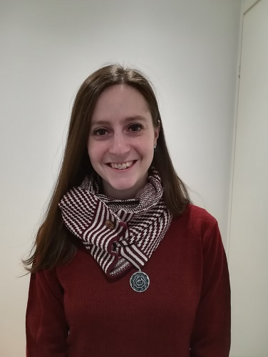

A bit about me
I am a "late blooming" tech enthusiast who started the journey into programming and software development after the Corona pandemic put my previous career upside-down.
I was born in Italy and lived there for most of my life, dedicating all my upper and university education to foreign languages and culture studies.
I've started learning programming in JavaScript not long after losing my job in 2020 and since then it has been a continuous evolution. Currently studying in Haaga-Helia Business IT.